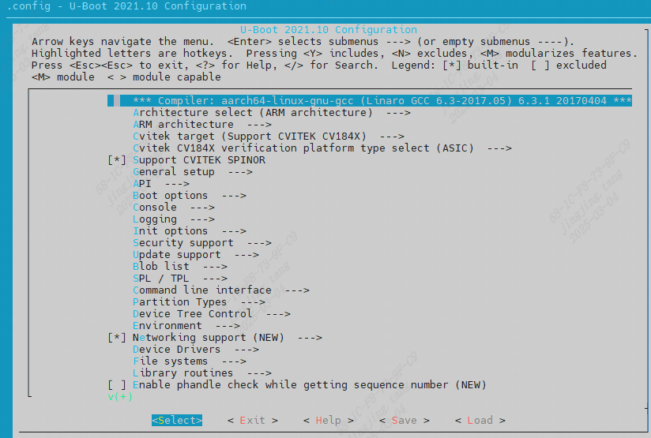

3. U-boot Porting¶
3.1. U-boot Hardware Environment¶
The peripheral components on the cv184x development board include DDR, eMMC, SPI NAND
Flash, and SPI NOR Flash, for all models
See CV184x_Hardware Design User Guide_V1.0
3.2. Pin Configuration (Pinmux)¶
For different EVBs and peripheral devices, initialization can be configured in cvi_board_init.c.
$ cat build/boards/cv184x/cv1842hp_wevb_0014a_spinor/u-boot/cvi_board_init.c
int cvi_board_init(void)
{
PINMUX_CONFIG(PAD_MIPIRX1P, IIC1_SDA);
PINMUX_CONFIG(PAD_MIPIRX0N, IIC1_SCL);
PINMUX_CONFIG(PAD_MIPIRX1N, XGPIOC_8);
PINMUX_CONFIG(PAD_MIPIRX0P, CAM_MCLK0);
return 0;
}
3.3. Build U-Boot¶
Build U-Boot as follows:
$ source build/envsetup_soc.sh
$ defconfig cv1842hp_wevb_0014a_spinor
$ clean_uboot && build_uboot
[TARGET] u-boot-dts
......
[TARGET] u-boot-build
......
Obtain fip_spl.bin and fip.bin (containing bootloader + U-Boot)
$ ls install/soc_cv1842hp_wevb_0014a_spinor/fip.bin
install/soc_cv1842hp_wevb_0014a_spinor/fip.bin
$ ls install/soc_cv1842hp_wevb_0014a_spinor/fip_spl.bin
install/soc_cv1842hp_wevb_0014a_spinor/fip_spl.bin
U-boot Settings
Default U-Boot configuration for the EVB
$ cat build/boards/cv184x/cv1842hp_wevb_0014a_spinor/u-boot/cvitek_cv1842hp_wevb_0014a_spinor_defconfig
CONFIG_ARM=y
CONFIG_SYS_MALLOC_F_LEN=0x100000
CONFIG_NR_DRAM_BANKS=1
CONFIG_DEFAULT_DEVICE_TREE="cv184x_asic"
CONFIG_IDENT_STRING=" cvitek_cv184x"
...
There are two ways to modify a defconfig file. The first is to modify the defconfig file directly (not recommended); the second is to use the graphical menu interface (recommended).
Run the menuconfig_uboot command to modify the U-Boot configuration through the graphical interface.

After exiting, the settings are saved to:
u-boot-2021.10/build/cv1842hp_wevb_0014a_spinor/.config
The u-boot.bin produced by a native U-Boot build cannot be burned directly to FLASH. We use the Firmware Image Package (FIP) method from the ARM Trusted Firmware Design, which packages uboot.bin into fip.bin; fip_spl.bin is the image file loaded during fast boot.